ЛАБОРАТОРНАЯ РАБОТА № 6
ИЗУЧЕНИЕ И ХАРАКТЕРИСТИКА
КОМПОНЕНТОВ ЭВМ
Цель работы — изучить основные компоненты ЭВМ и их характеристики, провести тестирование быстродействия ОЗУ, построить структурную схему ПК.
Теоретическая часть
FSB (Front Side Bus) – шина в двухшинной архитектуре DIB корпорации Intel шина, связывающая процессор с оперативно запоминающие устройство (ОЗУ).
DMI (Desktop Management Interface) — интерфейс программирования приложений (Application Programming Interface – API), позволяющий программному обеспечению собирать данные о характеристиках компьютера. Спецификация DMI разработана консорциумом Distributed Management Task Force (DTMF), возглавляемом фирмой Intel. Данный интерфейс позволяет пользователю получить информацию об аппаратном обеспечении ПК.
SPD (Serial Presence Detect) – спецификация, описывающая технологию записи, хранения и считывания информации о характеристиках 168-контактных модулей DIMM
Чипсет (chip set) – набор микросхем, спроектированных для совместной работы с целью выполнения набора каких-либо функций. Так, в компьютерах чипсет выполняет роль связующего компонента, обеспечивающего совместное функционирование подсистем памяти, ЦПУ, ввода-вывода и других. Чипсеты встречаются и в других устройствах, например, в радиоблоках сотовых телефонов. Чипсет состоит из двух основных микросхем (иногда они объединяются в один чип):
MCH (Memory Controller Hub) — контроллер-концентратор памяти — северный мост (northbridge) — обеспечивает взаимодействие центрального процессора (ЦП) с памятью и видеоадаптером (PCI Express). В новых чипсетах часто имеется интегрированная видеоподсистема. Контроллер памяти может быть интегрирован в процессор (например Opteron, Nehalem, UltraSPARC T1).
ICH (I/O Controller Hub) — контроллер-концентратор ввода-вывода — южный мост (southbridge) — обеспечивает взаимодействие между ЦП и жестким диском, картами PCI, интерфейсами IDE, SATA, USB и пр. Также иногда к чипсетам относят микросхему Super I/O, которая подключается к южному мосту и отвечает за низкоскоростные порты RS232, LPT, PS/2.
Everest Ultimate Edition — программа для просмотра информации об аппаратной и программной конфигурации компьютера. Программа анализирует конфигурацию компьютера и выдает подробную информацию об установленных в системе устройствах — процессорах, системных платах, видеокартах, аудиокартах, модулях памяти и так далее, а также информацию об их характеристиках, поддерживаемых ими наборах команд и режимах работы, их производителях, установленном программном обеспечении, конфигурации операционной системы и установленных драйверах.
В программе имеется достаточно широкий набор тестов:
· чтение из памяти — тестирует скорость пересылки данных из ОЗУ к процессору;
· запись в память;
· копирование в памяти — тестирует скорость пересылки данных из одних ячеек памяти в другие через кэш процессора;
· задержка памяти — тестирует среднее время считывания процессором данных из ОЗУ;
CPU Queen — тестирует производительность процессора в целочисленных операциях при решении классической «Задачи с ферзями»;
CPU PhotoWorxx — тестирует производительность блоков целочисленных арифметических операций, умножения, а также подсистемы памяти при выполнении ряда стандартных операций с RGB-изображениями;
CPU ZLib — тестирует производительность процессора и подсистемы памяти при создании архивов формата ZIP при помощи популярной открытой библиотеки ZLib. Использует целочисленные операции;
CPU AES — тестирует скорость процессора при выполнении шифрования по криптоалгоритму AES. Способен использовать низкоуровневые команды шифрования процессоров VIA C3 и C7, что позволяет последнему быть одним из лидеров теста, превосходя по производительности ряд многоядерных процессоров Intel и AMD;
FPU Julia — тестирует производительность блоков процессора, выполняющих операции с плавающей запятой, в вычислениях с 32-разрядной точностью. Моделирует несколько фрагментов фрактала Жюлиа. При возможности использует инструкции MMX, SSE и 3DNow!;
FPU Mandel — тестирует производительность блоков процессора, выполняющих операции с плавающей запятой, в вычислениях с 64-разрядной точностью путем моделирования нескольких фрагментов фрактала Мандельброта. Способен использовать инструкции SSE2.
FPU SinJulia — усложненный вариант теста FPU Julia. Тестирует производительность блоков процессора, выполняющих операции с плавающей запятой, в вычислениях с 80-разрядной точностью. Использует инструкции x87, предназначенные для вычисления тригонометрических и показательных функций.
Тайминги оперативной памяти. Схема таймингов включает в себя задержки CL-tRCD-tRP-tRAS соответственно. Для работы с памятью необходимо для начала выбрать чип, с которым мы будем работать. Делается это командой CS (Chip Select). Затем выбирается банк и строка. Перед началом работы с любой строкой необходимо ее активировать. Делается это командой выбора строки RAS (Row Address Strobe), при выборе строки она активируется. Затем нужно выбрать столбец командой CAS (Column Address Strobe) – эта же команда инициирует чтение. Затем считать данные и закрыть строку, совершив предварительный заряд (precharge) банка.
CL(Cas Latency) – минимальное время между подачей команды на чтение (CAS) и началом передачи данных (задержка чтения).
tRCD (RAS to CAS delay) – время, необходимое для активизации строки банка, или минимальное время между подачей сигнала на выбор строки (RAS) и сигнала на выбор столбца (CAS).
tRP (Row Precharge) – время, необходимое для предварительного заряда банка (precharge). Иными словами, минимальное время закрытия строки, после чего можно активировать новую строку банка.
tRAS (Active to Precharge) – минимальное время активности строки, то есть минимальное время между активацией строки (ее открытием) и подачей команды на предзаряд (начало закрытия строки). Строка не может быть закрыта раньше этого времени.
CR (Command Rate) – Время, необходимое для декодирования контроллером команд и адресов. Иначе, минимальное время между подачей двух команд. При значении 1T команда распознается 1 такт, при 2T – 2 такта, 3T – 3 такта.
Это все основные тайминги. Остальные тайминги имеют меньшее влияние на производительность.
Порты (каналы ввода - вывода)
На задней стенке корпуса современных ПК размещены (точнее могут размещаться) следующие порты:
Game – для игровых устройств (для подключения джойстика).
VGA (Video Graphics Array) – выход контроллера графического адаптера (видеокарты) для подключения монитора.
COM-port – асинхронные последовательные (обозначаемые СОМ1 — СОМЗ). Через них обычно подсоединяются мышь, модем и тому подобное.
PS/2 – асинхронные последовательные порты для подключения клавиатура и манипулятора мышь.
LPT – параллельные (обозначаемые LPT1—LPT4), к ним обычно подключаются принтеры.
USB (Universal Serial Bus) – универсальный интерфейс для подключения 127 устройств (этот интерфейс может располагаться на передней или боковой стенке корпуса).
IEЕЕ-1394 (FireWire) – интерфейс для передачи больших объемов видео информации в реальном времени (для подключения цифровых видеокамер, внешних жестких дисков, сканеров и другого высокоскоростного оборудования). Интерфейсом FireWire оснащены все видеокамеры, работающие в цифровом формате. Может использоваться и для создания локальных сетей.
iRDA - инфракрасные порты предназначены для беспроводного подключения карманных или блокнотных ПК или сотового телефона к настольному компьютеру. Связь обеспечивается при условии прямой видимости, дальность передачи данных не более 1 м. Если в ПК нет встроенного iRDA адаптера, то он может быть выполнен в виде дополнительного внешнего устройства (USB iRDA адаптера), подключаемого через USB-порт. А также разъемы звуковой карты для подключения колонок, микрофона и линейный выход.
Практическая часть
Задание 1. Ознакомьтесь с суммарной информацией о компьютере.
1. Запустите программу Everest Ultimate Edition.
2.В левом меню в раскрывающемся списке «Компьютер» выберите пункт «Суммарная информация».
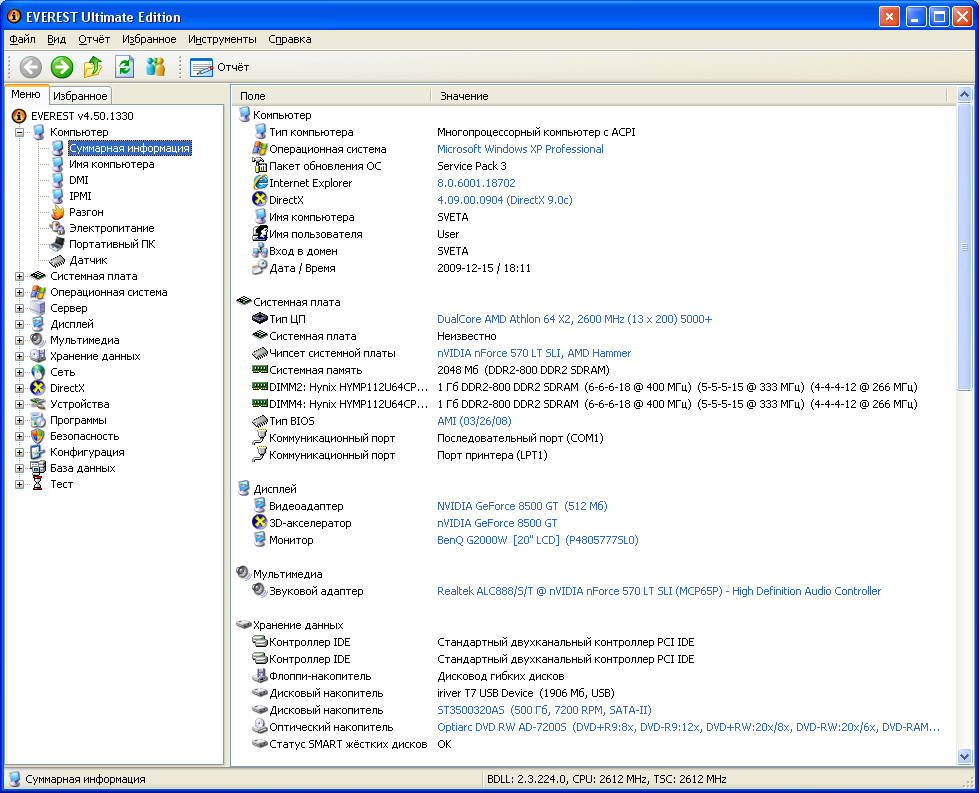
3. Выпишите из списка основных параметров исследуемого компьютера в правом окне:
тип компьютера;
тип операционной системы;
имя компьютера;
имя пользователя;
тип центрального процессора (ЦП);
тип системной платы;
тип чипсета системной платы;
количество и тип оперативной (системной) памяти;
тип видеоадаптера;
тип монитора;
тип и объем дискового накопителя;
перечислить другие устройства ввода-вывода, имеющиеся на исследуемом ПК.
Задание 2. Ознакомьтесь с ЦП исследуемого компьютера.
1. В левом меню в раскрывающемся списке «Системная плата» выберите пункт «ЦП».
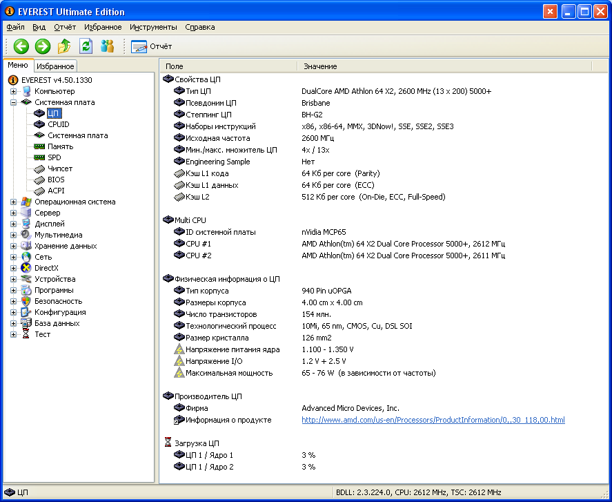
2. Выпишите основные параметры ЦП из списка в правом окне:
тип ЦП;
название ядра (псевдоним) ЦП;
степинг ЦП;
наборы инструкций;
исходная частота;
размер и характеристики кэш памяти ЦП;
физические параметры ЦП:
тип корпуса;
размер корпуса;
число транзисторов;
технологический процесс;
размер кристалла;
напряжение питания ядра;
напряжение;
типичная мощность;
максимальная мощность.
3. В левом меню в раскрывающемся списке «Компьютер» выберите пункт «Разгон».
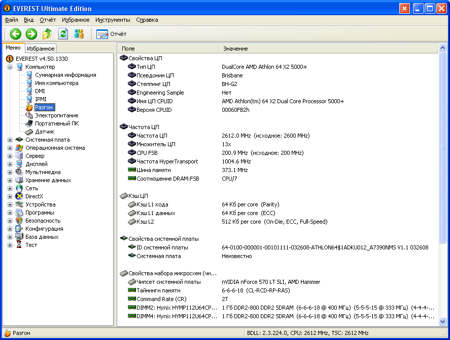
4. Выпишите текущую частоту процессора.
5. Сравните исходную частоту процессора с текущей.
Задание 3. Ознакомьтесь с материнской (системной) платой ПК.
1. В левом меню в раскрывающемся списке «Системная плата» выберите пункт «Системная плата».
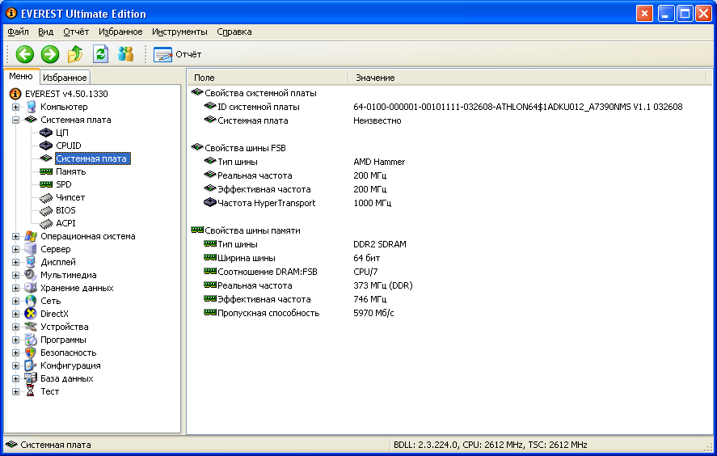
2. Выпишите из списка основных параметров материнской платы в правом окне:
название материнской платы и фирму;
свойства шины FSB:
тип шины;
ширина шины;
реальная частота;
эффективная частота;
пропускная способность;
свойства шины памяти:
тип шины;
ширина шины;
соотношение DRAM:FSB;
реальная частота;
эффективная частота;
пропускная способность;
название чипсета – Intel Hub Interface;
физическую информацию о системной плате:
число гнезд для ЦП;
разъемы ОЗУ;
встроенные устройства;
размеры системной платы;
чипсет системной платы.
Задание 4. Ознакомьтесь со свойствами модулей ОЗУ.
1. В левом меню в раскрывающемся списке «Системная плата» выберите пункт «SPD».
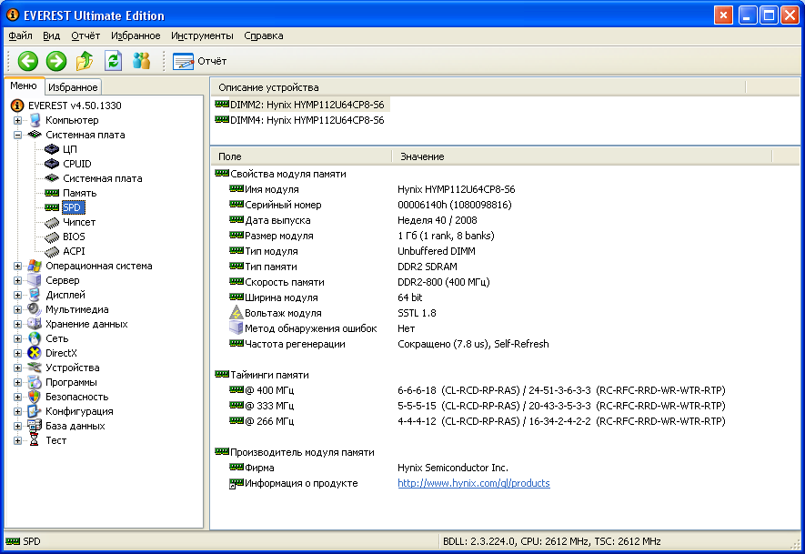
2. Выпишите свойства модулей ОЗУ и основные тайминги памяти, для разных частот.
Задание 5. Ознакомьтесь с чипсетом материнской платы.
1. В левом меню в раскрывающемся списке «Системная плата» выберите пункт «Чипсет».
2. Ознакомьтесь со свойствами «северного моста» чипсета. Для этого в верхнем окне выберите пункт «Северный мост».
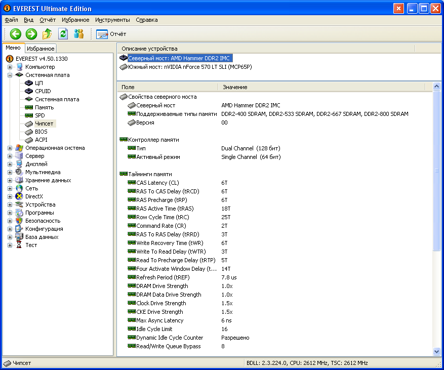
3. Выпишите:
название «северного моста»;
поддерживаемые скорости FSB;
поддерживаемые типы оперативной памяти;
тип контроллера памяти;
максимальный объем оперативной памяти;
основные тайминги памяти (CR, tRAS, tRP, tRCD, CL).
4. Ознакомьтесь со свойствами «южного моста» чипсета. Для этого в верхнем окне выберите пункт «Южный мост».
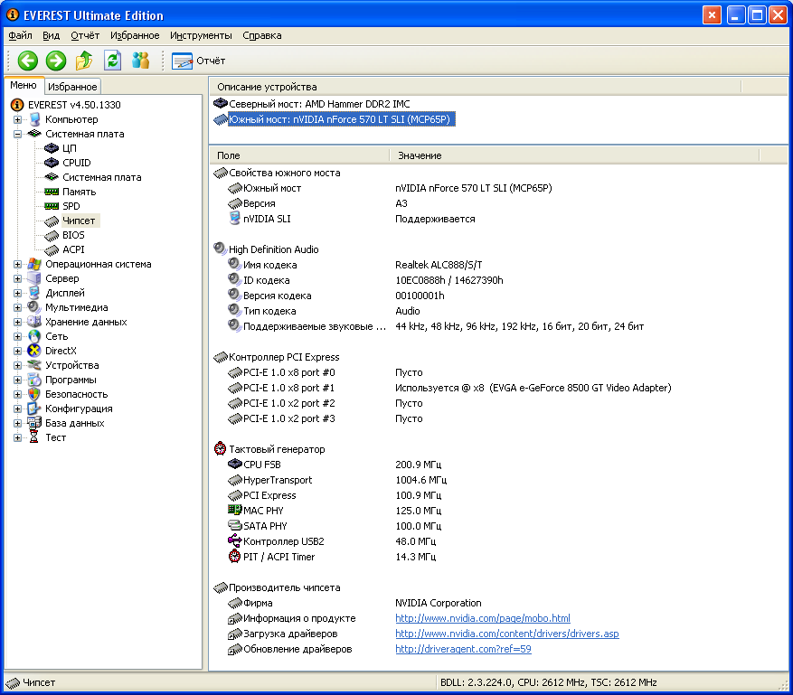
5. Перечислите устройства, содержащиеся в «южном мосте».
Задание 6. Ознакомьтесь с системой хранения данных ПК – постоянно запоминающими устройствами (ПЗУ).
1. В левом меню в раскрывающемся списке «Хранение данных» выберите пункт «Хранение данных Windows». В правом верхнем окне появится список всех возможных ПЗУ исследуемого компьютера.
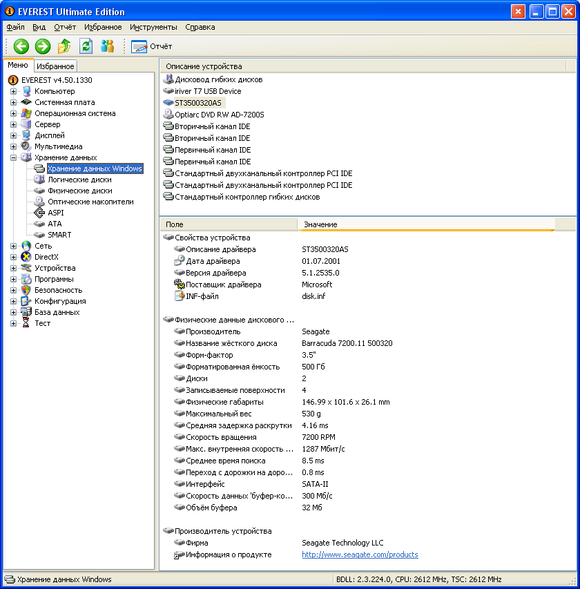
2. Рассмотрите параметры жесткого диска и оптического DVD накопителя. Для этого выпишите их основные характеристики. Такие как:
название ЖД;
производитель;
емкость;
интерфейс подключения;
физические параметры.
Задание 7. Ознакомьтесь с имеющимися на плате портами ввода-вывода.
1. В разделе «Компьютер» выберите пункт «DMI».
2. Из раздела «Системные разъемы» выпишите имеющиеся на материнской плате разъемы.
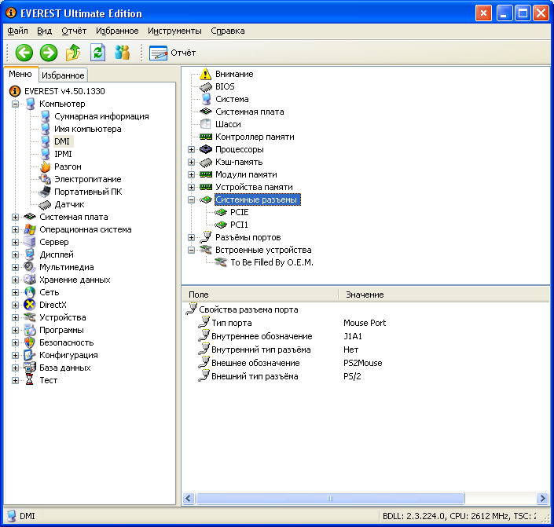
3. Из раздела «Разъемы портов» выпишите разъемы для подключения внешних устройств ввода-вывода, для каждого укажите тип порта.
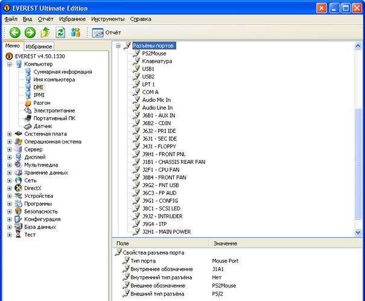
Задание 8. Проведите тестирование быстродействия ОЗУ.
1. Перейти в раздел «Тест» в левом меню.
2. Выберите пункт «Чтение из памяти» для тестирования скорости пересылки данных из ОЗУ к процессору.
3. Для начала тестирования нажмите кнопку «Обновить» либо клавишу «F5» на клавиатуре.
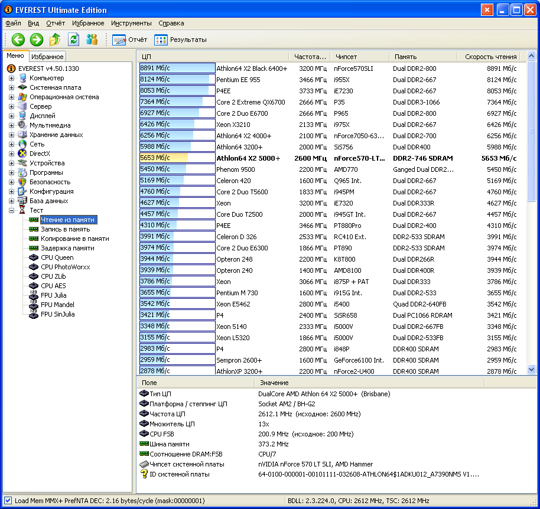
4. Выберите пункт «Запись в память».
5. Нажмите кнопку «Обновить» для начала тестирования.
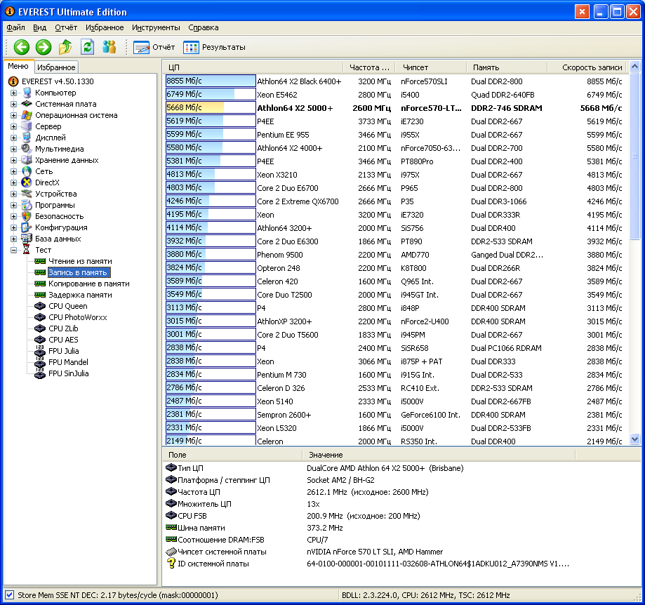
6. Выберите пункт «Копирование в памяти» для тестирования скорости пересылки данных из одних ячеек памяти в другие через кэш процессора.
7. Нажмите кнопку «обновить» либо клавишу «F5» на клавиатуре.
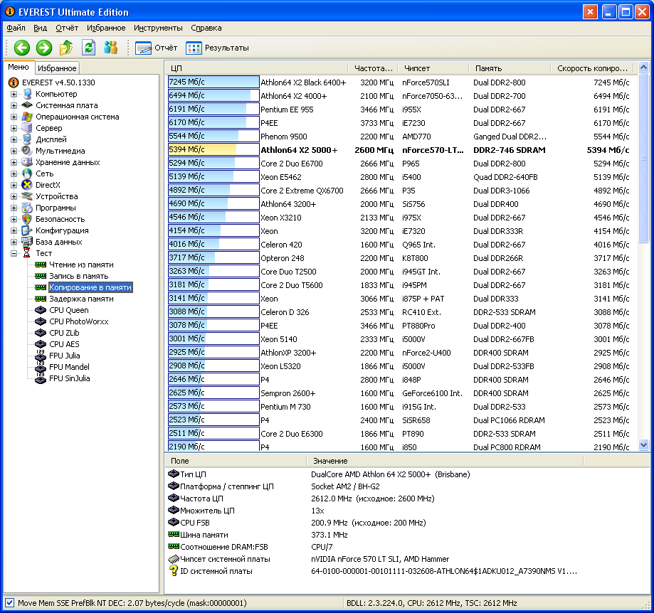
8. Выберите пункт «Задержка в памяти» для тестирования среднего времени считывания процессором данных из ОЗУ.
9. Нажмите клавишу «F5» на клавиатуре для тестирования.
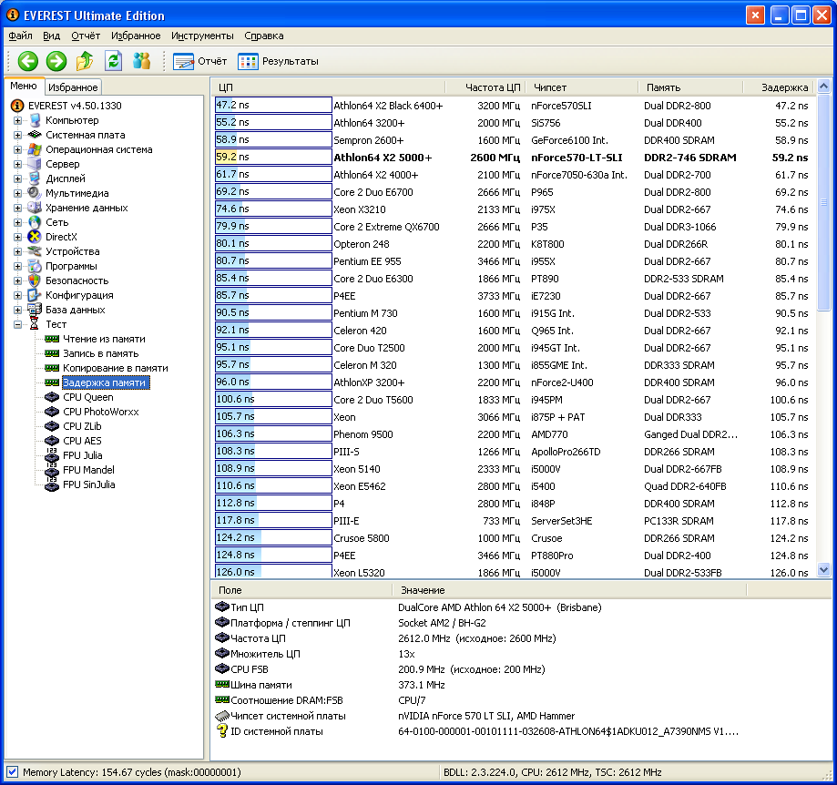
Задание 9. По результатам предыдущих пунктов постройте структурную схему ПК.
Контрольные вопросы
1. Основные принципы построения ЭВМ, структура Дж. фон Неймана.
2. Классическая архитектура ЭВМ и принципы фон Неймана.
3. Нарисуйте структурную схема ПК, поясните назначение всех компонентов. Центральный процессор, основные характеристики. Система памяти: состав, назначение. Оперативная память DRAM: строение, основные параметры. Системная магистраль: определение, назначение, параметры.
4. Шины FSB, Hyper Transport, PCI, PCI-E: назначение, основные параметры, быстродействие .
5. «Северный мост», «Южный мост»: состав, назначение.
6. Устройства ввода-вывода ПК.
7. Факторы, влияющие на производительность ПК.
8. Какие устройства к каким портам могут подключаться.